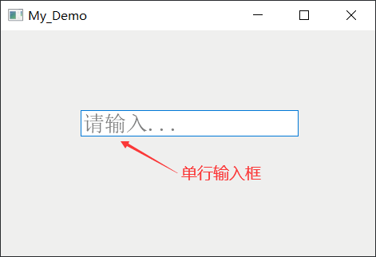
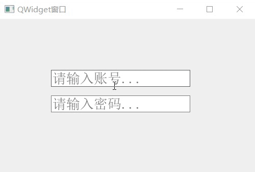

首页 > 编程笔记
Qt QLineEdit单行输入框用法详解
QLineEdit 是 Qt 提供的一个控件类，它直接继承自 QWdiget 类，专门用来创建单行输入框，如下图所示：
实际开发中，我们经常用到 QLineEdit 输入框，比如接收用户输入的个人信息、账户信息、角色名称等，就可以用 QLineEdit 实现。
在 QLineEdit 输入框中，用户可以直接输入一行文本，也可以粘贴一行文本，还可以修改输入框内的文本。某些实际场景中，QLineEdit 输入框还可以对用户输入的内容加以限定，比如：
下表列出了 QLineEdit 类对象经常调用的一些属性以及它们各自的含义：
除了上表提到的获取和修改属性值的方法外，QLineEdit 类还提供了一些功能实用的方法，例如：

图 1 单行文本输入框
图 1 单行文本输入框
实际开发中，我们经常用到 QLineEdit 输入框，比如接收用户输入的个人信息、账户信息、角色名称等，就可以用 QLineEdit 实现。
QLineEdit单行输入框的创建
每个单行输入框都是 QLineEdit 类的一个实例对象，QLineEdit 类提供有两个构造函数，分别是：
QLineEdit(QWidget *parent = Q_NULLPTR)
QLineEdit(const QString &contents, QWidget *parent = Q_NULLPTR)
在 QLineEdit 输入框中，用户可以直接输入一行文本，也可以粘贴一行文本，还可以修改输入框内的文本。某些实际场景中，QLineEdit 输入框还可以对用户输入的内容加以限定，比如：
- 限定文本的长度，例如用户最多可以输入 20 个字符；
- 输入文本的格式，例如用户输入出生日期时，必须按照“yy-mm-dd”的格式输入；
- 输入的文本内容，例如当前输入框仅允许用户输入数字，或者只允许用户输入英文字符。
QLineEdit单行输入框的使用
QLineEdit 类的内部提供了很多实用的属性和方法，同时还从 QWidget 父类处继承了一些属性和方法。下表列出了 QLineEdit 类对象经常调用的一些属性以及它们各自的含义：
| 属 性 | 含 义 |
|---|---|
| text |
保存输入框中的文本。 该属性的值可以通过 text() 方法获取，也可以通过 setText(const QString &) 方法修改。 |
|
maxLength |
设置输入框中最多可以放置的文本长度。当文本长度超出最大限度后，超出部分将被丢弃。 默认情况下，maxLength 的值为 32767。该属性的值可以通过 maxLength() 函数获得，也可以通过 setMaxLength(int) 方法修改。 |
|
placeholderText |
设置提示信息，例如当用户未选中输入框时，输入框中显示“请输入...”，而用户选中输入框时，"请输入..." 随之消失。 该属性的值可以通过 placeholderText() 方法获取，也可以通过 setPlaceholderText(const QString &) 方法修改。 |
|
clearButtonEnabled |
当输入框中有文本时，输入框的右侧可以显示一个“一键清除”按钮。该属性的默认值为 false，即输入框中不会自动显示清除按钮。 该属性的值可以通过 isClearButtonEnabled() 方法获取，也可以通过 setClearButtonEnabled(bool enable) 方法修改。 |
| echoMode |
设定输入框中文本的显示样式，该属性的可选值有以下几个：
该属性的是可以通过 echoMode() 方法获取，也可以通过 setEchoMode(EchoMode) 方法修改。 |
| frame |
控制输入框的边框。默认情况下，输入框是带有边框的。 该属性的值可以通过 hasFrame() 方法获取，也可以通过 setFrame(bool) 方法修改。 |
除了上表提到的获取和修改属性值的方法外，QLineEdit 类还提供了一些功能实用的方法，例如：
| 成员方法 | 功 能 |
|---|---|
| move(int x, int y) | 指定输入框位于父窗口中的位置。 |
| setValidator(const QValidator *v) | 限制输入框中的文本内容，比如输入框只包含整数。 |
| setReadOnly(bool) | 设置输入框是否进入只读状态。在只读状态下，用户仍可以采用粘贴、拖拽的方式向输入框中放置文本，但无法进行编辑。 |
| setAlignent(Qt::Alignment flag) | 设置输入框中输入文本的位置。 |
QLineEdit单行输入框的信号和槽
QLineEdit 类提供了几个信号函数，分别对应用户的几种输入状态。| 信号函数 | 功 能 |
|---|---|
| textEdited(const QString &text) |
当用户编辑输入框中的文本时，此信号就会触发，text 参数即为用户新编辑的文本。
|
| textChanged(const QString &text) | 只要输入框中的文本内容发生变化，就会触发此信息。 |
| returnPressed() | 用户按下回车键时，会触发此信号。 |
| editingFinished() | 用户按下回车键，或者鼠标点击输入框外的其它位置时，会触发此信号。 |
QLineEdit 类常用的槽函数有以下几个：
| 槽函数 | 功 能 |
|---|---|
| clear() | 清空文本框中的内容。 |
| setText(const QString &) | 重新指定文本框中的内容。 |
QLineEdit单行输入框的用法示例
下面的实例给大家演示了 QLineEdit 单行输入框控件的基本用法，同时还演示了几个成员方法的用法。
#include <QApplication>
#include <QWidget>
#include <QLineEdit>
using namespace std;
int main(int argc, char *argv[])
{
QApplication a(argc, argv);
//创建一个窗口，作为输入框的父窗口
QWidget widget;
//设置窗口的标题
widget.setWindowTitle("QWidget窗口");
//接下来，分别创建两个输入框，用于让用户分别输入账号和密码
//创建账号输入框
QLineEdit lineEdit(&widget);
//指定输入框位于父窗口中的位置
lineEdit.move(100,100);
//设置提示信息
lineEdit.setPlaceholderText("请输入账号...");
//让输入框显示“一键清除”按钮
lineEdit.setClearButtonEnabled(true);
//创建密码输入框
QLineEdit lineEditPass(&widget);
lineEditPass.setPlaceholderText("请输入密码...");
lineEditPass.move(100,150);
//指定文本显示方式，保护用户账号安全
lineEditPass.setEchoMode(QLineEdit::Password);
//指定窗口的尺寸和显示文字的大小
widget.resize(500,300);
widget.setFont(QFont("宋体",16));
widget.show();
return a.exec();
}
运行结果为：

图 2 运行结果
图 2 运行结果
关注公众号「站长严长生」，在手机上阅读所有教程，随时随地都能学习。内含一款搜索神器，免费下载全网书籍和视频。

微信扫码关注公众号